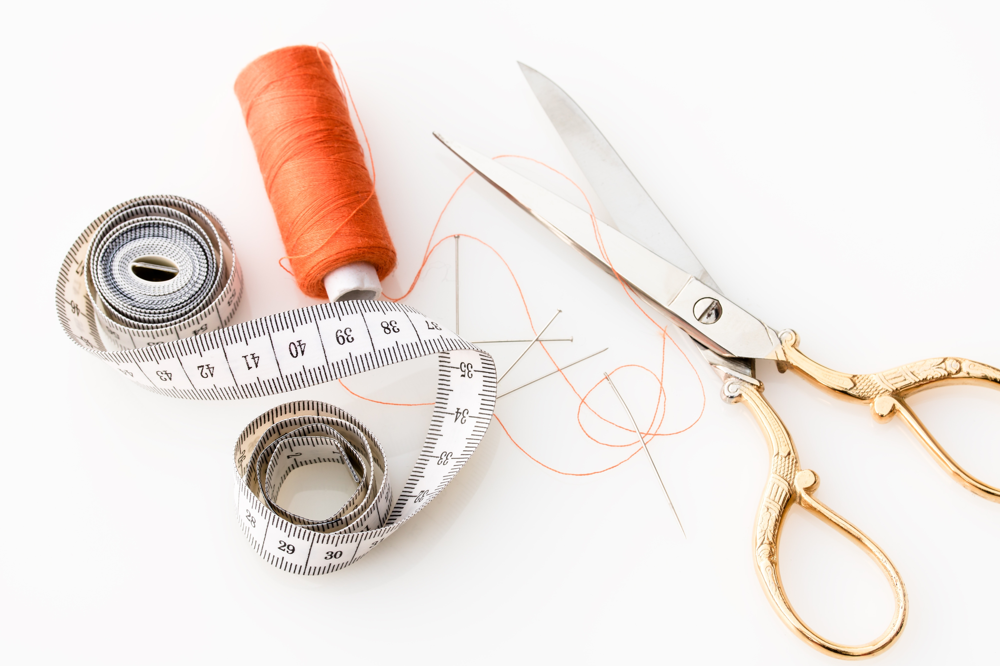
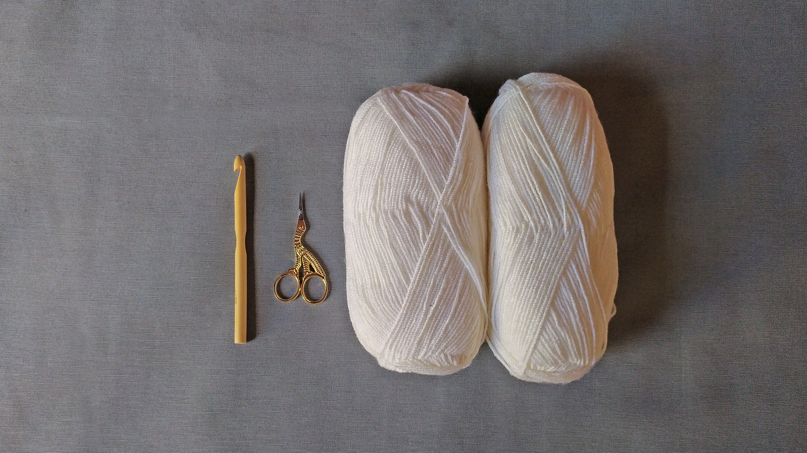
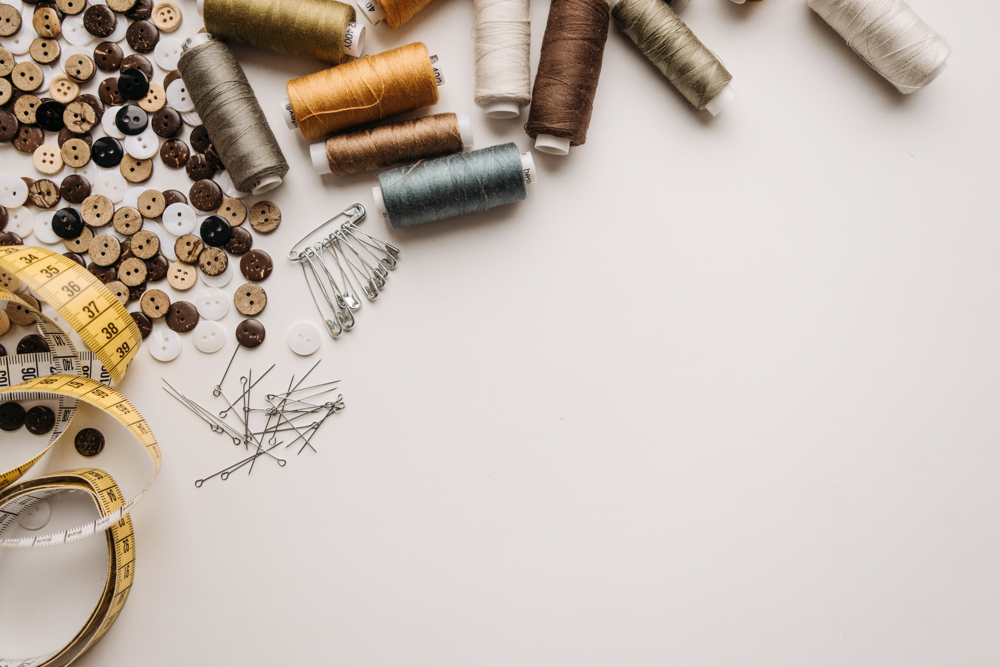

Materiales
¿Qué necesitás para tejer? ¿Qué cantidad de materiales? ¿Sirven las agujas que tenés? Encontrá esas respuestas acá.
Puntos
Descubrí nuevas tramas para crear e inspirate para crear texturas originales.
Trucos
Enterate cuáles son los sencillos trucos que te van a ayudar a que tus tejidos queden súper prolijos.